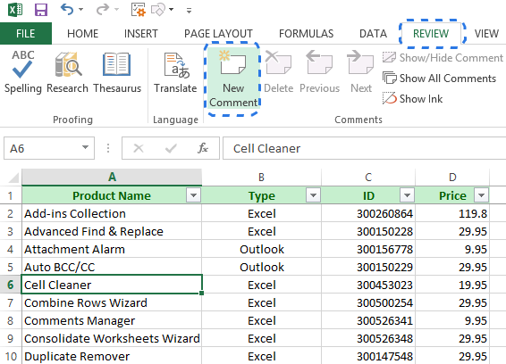

You can add comments to cells. When a cell has a comment, an indicator appears in the corner of the cell. When you hover your cursor over the cell, the comment appears.
Right-click the cell and then click Insert Comment (or press Shift+F2). If you're using Excel for Office 365, right-click the cell and choose New
Note. Type your annotation text. Click outside the cell.
